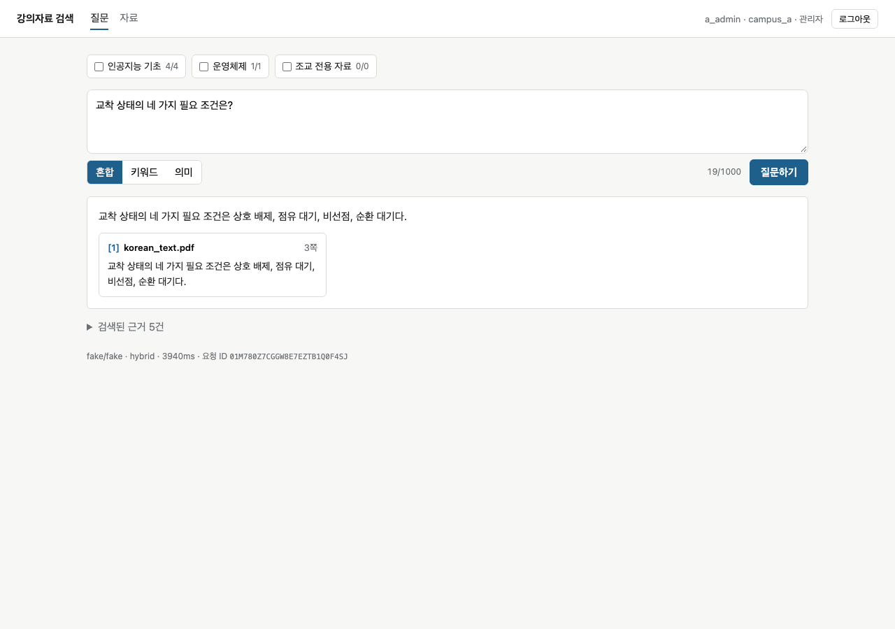
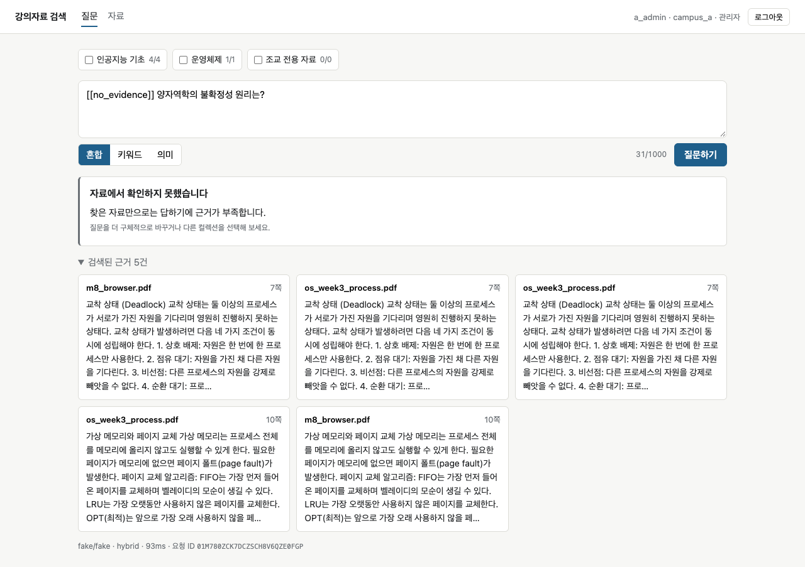
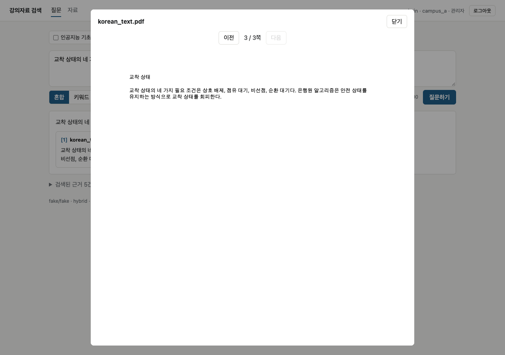
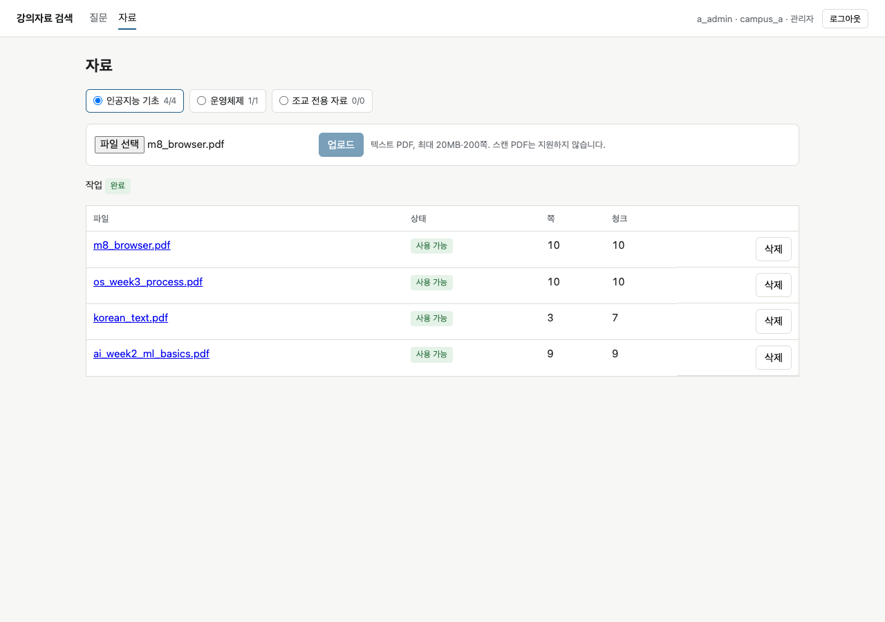

2026.11 ~ 진행 중 · 개인 프로젝트
강의자료 RAG 검색 서비스
강의 PDF를 반복해서 찾고 AI 답변을 원문과 대조하는 시간을 줄이기 위해 개발했습니다. 질문→허용된 자료 검색→인용된 PDF 페이지 확인을 하나의 흐름으로 구현했습니다.

해결하려는 문제
시험 준비 중 여러 과목의 자료에서 근거를 다시 찾는 과정이 반복됐습니다. 용어가 정확히 기억나지 않으면 키워드만으로 찾기 어려웠고, AI 답변도 원문과 대조할 필요가 있었습니다. 과목·기관별 자료가 섞이지 않는 접근 경계도 함께 다뤘습니다.
그래서 목표를 챗봇 화면이 아니라 허용된 자료 안에서 답과 원문 페이지를 바로 확인하는 것으로 잡았습니다.
주요 시도
-
키워드 검색과 의미 검색을 같은 기준으로 비교
OpenSearch BM25(한국어 Nori 분석기)와 Qdrant 벡터 검색을 따로 돌리고, 두 결과를 앱 계층의 RRF로 합쳤습니다. 엔진 내장 hybrid 대신 앱에서 합쳐서 세 방식(키워드, 의미, 혼합)을 같은 평가 데이터로 비교할 수 있게 했습니다.
-
근거가 없으면 답하지 않기
검색된 근거를 바탕으로 답변을 생성하도록 구성했고, 인용 ID와 원문 문장을 서버에서 다시 검증했습니다. 검증을 통과하지 못하거나 근거가 부족하면 답변을 보류하도록 구현했습니다.
-
기관과 역할별 자료 격리
서버가 요청마다 허용 범위를 계산해 두 검색 엔진·파일 조회·인용·캐시에 같은 범위를 적용했습니다. 엔진 결과는 SQLite 원장에서 다시 확인했고, 클라이언트가 보낸 기관 ID만으로 접근 권한을 결정하지 않았습니다.
사용자 흐름
- 자료 준비관리자가 허용된 과목에 PDF 업로드
- 질문학생이 과목과 검색 방식을 선택
- 답과 근거 확인인용 카드에서 원문 페이지로 이동
- 근거 부족답변을 보류하고 검색 자료 확인
데이터·시스템 흐름
- PDF 업로드
- 원장 등록
- 파싱, 페이지 경계 청킹
- 임베딩 (bge-m3)
- Qdrant 벡터 + OpenSearch BM25
- 허용 범위 계산
- 두 엔진 병렬 검색
- RRF 결합
- 원장 재확인
- 답변, 인용 검증 또는 보류
- 백엔드
- Python 3.12, FastAPI, SQLite 원장, 단일 작업 워커
- 검색
- Qdrant 1.20, OpenSearch 2.19 + Nori, 앱 계층 RRF
- 답변
- 공통 공급자 인터페이스. OpenAI 실제 호출·인용·보류 확인, Claude 실제 호출은 미검증
- 프론트엔드
- React, TypeScript, Vite, React Query, react-pdf
- 운영
- Docker Compose 4개 서비스, GitHub Actions 기본·Linux 통합·브라우저 CI 검증 완료
역할
- 요구사항, 설계, 구현, 평가, 문서화 전체 (1인)
- AI 코딩 도구를 활용해 구현하고, 요구사항·설계 선택·테스트 기준과 미검증 항목을 직접 관리
- 선택의 이유를 ADR로 기록 (RRF 위치, SQLite와 단일 워커, Nori 설정, 청킹, 임베딩, 인용과 보류, 캐시, 질문 임베딩 묶음 처리 등)
성과
아래 개선 전후 지연 수치는 Apple M5·24GB·macOS의 기존 네이티브 측정 결과로 정리했습니다. 이후 Docker 기능 검증과 실제 OpenAI 연결 확인을 별도로 수행했으며, 광범위한 답변 품질·컨테이너 부하 성능 평가와 구분했습니다.
검색 정확도 (2026-11-12, dev 30문항, 정답 있는 26문항 기준)
| 방식 | Hit@1 | Hit@3 | MRR@10 |
|---|---|---|---|
| 키워드 (BM25) | 0.96 | 1.00 | 0.98 |
| 의미 (벡터) | 1.00 | 1.00 | 1.00 |
| 혼합 (RRF) | 1.00 | 1.00 | 1.00 |
질문이 슬라이드 제목과 같은 표현이고 과목마다 문서가 하나뿐이라, 세 방식이 모두 만점에 가까워 구분이 되지 않았습니다. 동결 test 10문항도 이후 Docker에서 확인했습니다. 세 방식 모두 Hit@1 1.0, 실패·skip 0건이었지만 작은 자작 표본이라 일반화 성능을 주장하지 않았습니다.
검색 지연 개선 (2026-11-13, 혼합 검색, 캐시 off, 요청 200건)
| 동시 요청 | p50 | p95 | 처리량 |
|---|---|---|---|
| 1개 | 46ms | 56ms | 21 rps |
| 5개, 개선 전 | 136ms | 166ms | 36 rps |
| 5개, 개선 후 | 118ms | 127ms | 43 rps |
구간별로 재 보니 지연의 93%가 질문 임베딩(CPU 41ms)이었습니다. 동시에 들어온 질문을 한 번에 묶어 임베딩하도록 바꿔 동시 5개에서 p50을 약 13%, 처리량을 약 18% 개선했습니다. 바꾸기 전과 후에 dev 30문항의 검색 순위가 30개 모두 같은 것도 확인했습니다.
최종 기능 검증 (2026-11-13)
API 회귀 테스트 156개, 웹 테스트 16개, 실제 검색 엔진 통합 테스트 5개를 확인했습니다. Docker의 4개 서비스와 원격 Linux 브라우저 검증도 통과했습니다.
로컬 Docker에서 실제 GPT 답변→인용 카드→PDF 7쪽 표시와 근거 없는 질문의 보류를 확인했습니다. 익명 파일 요청 401, 타기관 요청 404, 삭제 후 파일·검색 접근 차단도 검증했습니다.
OpenAI 단일 연결 확인과 두 가지 웹 시나리오의 결과입니다. Anthropic 호출이나 다양한 실제 자료의 답변 품질까지 검증한 것은 아닙니다.
트러블슈팅
-
삭제한 문서가 답변 근거로 다시 나옴
답변 생성을 기다리는 사이 문서를 삭제하면, 이미 가져온 검색 결과에 그 문서가 남아 답변에 인용됐습니다. 이 상황을 실패하는 테스트로 먼저 재현한 뒤, 응답 직전에 새 DB 세션으로 허용 범위와 원장을 다시 확인하고, 빠진 근거가 있으면 답하지 않도록 고쳤습니다. 같은 검사로 생성 중 권한이 바뀐 경우도 차단하도록 구현했습니다.
-
삭제 후 대기 중이던 색인 작업이 문서 상태를 덮어씀
삭제 전에 큐에 들어가 있던 색인 작업이 나중에 실행되면서, 삭제 중인 문서 상태를 failed로 덮어썼습니다. 역시 테스트로 재현한 뒤, 작업을 꺼낼 때 문서가 이미 삭제됐으면 작업을 취소(cancelled)로 끝내고 건너뛰도록 고쳤습니다.
-
근거 없는 질문에도 검색 결과가 나옴
"교수님 연구실 전화번호" 같은 자료에 없는 질문도 비슷한 단어 때문에 검색 결과가 나왔습니다. 검색 결과가 있다는 것만으로는 답할 수 있는지 판단할 수 없다는 걸 확인하고, 인용 검증과 보류 정책을 답변 단계에 두었습니다.
-
동시 요청에서 CPU 경합
동시 요청마다 임베딩을 따로 호출해 CPU 스레드를 나눠 쓰고 있었습니다. 일정 시간 기다렸다 묶는 방식은 혼자 쓸 때 지연이 늘어서 버리고, 처리 중인 묶음이 끝나면 그동안 쌓인 질문을 바로 묶는 방식(ADR-011)을 택했습니다.
화면



한계와 다음 작업
- 텍스트 PDF를 대상으로 구현했습니다. 스캔본·복잡한 표·다단 레이아웃은 지원 범위에 넣지 않았습니다.
- 실제 OpenAI 연결과 정상·근거 부족 시나리오는 확인했습니다. 광범위한 인용 정확도·오보류율과 Anthropic 실제 호출은 검증하지 못했습니다.
- 평가 자료와 문항을 직접 만들었고 표본이 작았습니다. 허용된 실제 자료로 평가 범위를 늘리는 과제를 남겼습니다.
- 정적 데모 계정과 단일 워커를 사용했습니다. 외부 운영 전 별도 인증·TLS·운영 정책이 필요합니다.